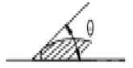
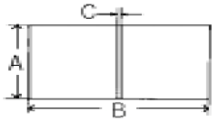
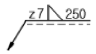

침투비파괴검사산업기사(구) (2005-03-06 기출문제)
1과목: 침투탐상시험원리
1. 침투탐상시험시 다음 중 침투액의 적심성이 가장 좋은 접촉각(θ)은?

- θ와는 무관하다.
- θ가 100°이상이 좋다.
- θ가 90°∼ 100°사이가 좋다.
- θ가 45°∼ 60°사이가 좋다.
(정답률: 알수없음)

2. 침투탐상시험에서 표면결함 속으로 침투제가 침투하는 속도는 다음의 어느 것에 가장 크게 영향을 받는가?
- 밀도
- 점성
- 중력가속도
- 상대적인 무게
(정답률: 알수없음)
3. 모세관내에서 액체가 상승한 높이는 액체의 표면장력과 접촉각과의 관계로 나타내는데, 모세관 현상으로 올라온 액체면이 오목하게 올라왔을 때의 접촉각은?
- 90°보다 크다.
- 90°이다.
- 90°보다 작다.
- 관의 직경에 따라 달라진다.
(정답률: 알수없음)
4. 형광침투탐상시험에 사용되는 침투액이 갖추어야 할 사항으로 틀린 것은?
- 점성이 낮아야 한다.
- 적심성이 좋아야 한다.
- 표면장력이 낮아야 한다.
- 인화점이 낮아야 한다.
(정답률: 알수없음)
5. 침투탐상검사에서 형광침투액 보다 염색침투액을 사용하는 것이 유리한 이유는?
- 자외선등이 필요치 않다.
- 침투 특성이 월등하다.
- 형광침투액보다 감도가 더 좋다.
- 염색침투액은 독성이 없으나, 형광침투액은 독성이 있다.
(정답률: 알수없음)
6. 침투탐상시험에 대한 다음 설명중 틀린 것은?
- 시험품 표면에 벌어져 있는 흠이라도 검출이 안될 경우도 있다.
- 대형 장치를 사용하지 않고도 탐상할 수 있는 방법도 있다.
- 시험품의 표면거칠기의 영향은 일반적으로 받지 않는다
- 다공질 재료의 탐상은 일반적으로 곤란하다.
(정답률: 알수없음)
7. 수세성 형광침투액-속건식현상제를 사용하여 검사하는 순서는?
- 전처리-침투처리-세척처리-현상처리 -후처리-관찰
- 전처리-침투처리-건조처리-세척처리 -현상처리-관찰
- 전처리-침투처리-세척처리-건조처리 -현상처리-관찰-후처리
- 전처리-침투처리-건조처리-세척처리-현상처리 -후처리-관찰
(정답률: 알수없음)
8. 수세성 형광 침투제 및 건식 현상제를 사용하여 반거치식으로 침투탐상검사시 자외선등의 위치로 적당한 곳은?
- 침투제 적용단계에
- 세척단계에
- 건조단계에
- 현상제 적용 단계에
(정답률: 알수없음)
9. 침투탐상시험시 시험결과의 신뢰성을 결정하는 주요 요소가 아닌 것은?
- 침투제의 감도
- 현상제의 선택
- 적용 방법
- 검사 비용
(정답률: 알수없음)
10. 고온의 열에 방치되었던 세라믹 제품에 나타난 지시로서 망사모양(그물모양)으로 서로 서로 교차한 선으로 나타나는 지시는?
- 피로 균열
- 수축 균열
- 연삭 균열
- 열충격지시
(정답률: 알수없음)
11. 침투제의 고유특성으로 인하여 대부분의 침투탐상검사법은 검사원의 건강을 해치게 할 수 있는데 이의 공통된 내용은?
- 침투제는 무기용제로 만들어져 있기 때문에 해롭다.
- 침투제에는 주의를 하지 않을 경우 피부염을 유발시킬수 있는 물질이 들어 있다.
- 침투제에는 이성 판단을 흐리게 할 수 있는 환각제 성분이 다량 들어 있다.
- 최근 침투제의 기술개발로 착시현상 이외의 위해 요소는 완전히 제거되었다.
(정답률: 알수없음)
12. 침투액의 점성 계수가 작을수록 침투 속도는?
- 빨라진다.
- 늦어진다.
- 무관하다.
- 항상 동일하다.
(정답률: 알수없음)
13. 침투탐상시험시 현상제의 기능으로 옳지 않은 것은?
- 실제의 결함폭보다 지시를 확대
- 모세관 현상에 의한 침투제의 흡입
- 지시모양의 콘트라스트 증가
- 열전 현상에 의한 현상제의 흡입
(정답률: 알수없음)
14. 다음 중 침투탐상시험에서 나타난 의사지시의 원인으로 가장 크게 작용하는 것은?
- 과잉세척
- 부적절한 현상제의 적용
- 시험품의 온도가 너무 낮을 때
- 부적절한 세척
(정답률: 알수없음)
15. 형광침투탐상 시험결과의 신뢰성을 보장하기 위한 작업조건 중 잘못 규정된 것은?
- 특별한 규정이 없는 한 암실에서 결과를 관찰해야 한다.
- 자외선조사장치의 자외선 강도는 보통 800μW/cm2를 넘어야 한다.
- 시험은 충분한 자격을 갖춘자에 의해 수행되어야 한다.
- 시험면의 밝기는 500lx 이상이어야 한다.
(정답률: 알수없음)
16. 침투탐상시험시 속건식현상제 적용법으로 가장 효율성이 클 것으로 예상되는 것은?
- 분무법
- 걸레질
- 솔질법
- 침지법
(정답률: 알수없음)
17. 침투탐상시 습식현상제를 적용하는 일반적인 방법은?
- 부드러운 솔로 적용
- 분무용 밸브로 적용
- 현상제가 묻은 헝겊으로 문질러 적용
- 분무 또는 침지법으로 적용
(정답률: 알수없음)
18. 침투탐상할 표면을 전처리하는 방법으로 샌드 브라스팅할때 문제점을 적절히 설명한 것은?
- 샌드 브라스팅으로 인해 불연속을 만든다.
- 화학적으로 반응을 일으켜 오염된 침투제가 불연속부에 들어가게 된다.
- 불연속부를 가리거나 메꾸어 버린다.
- 샌드 브라스팅에 사용되는 모래가 불연속의 폭을 넓힐 우려가 종종 있다.
(정답률: 알수없음)
19. 침투탐상검사시 침투액의 감도시험에 대한 설명 중 틀린 것은?
- 알루미늄 시험편을 사용한다.
- 시험편 반쪽엔 사용하던 침투액을 적용하고 다른 반쪽에는 새 침투액을 사용한다.
- 침투시간은 각각 다르게 적용해야 한다.
- 사용하던 침투액이 새 침투액보다 감도가 많이 떨어지면 폐기한다.
(정답률: 알수없음)
20. 후유화성 형광침투제를 사용한 검사법의 장점이 아닌 것은?
- 탐상감도가 상대적으로 우수하다.
- 비교적 침투시간을 단축시킬 수 있다.
- 시험체의 형상이 복잡한 경우에 적용이 용이하다.
- 얕고 넓은 결함탐상에 적합하다.
(정답률: 알수없음)
2과목: 침투탐상검사
21. 다음 중 결함지시로 나타나는 염료의 가시성에 영향을 주는 요인이 아닌 것은?
- 염료의 특성
- 염료의 농도
- 염료의 종류
- 염료의 가격
(정답률: 알수없음)
22. 다음 중 무관련 지시(Nonrelevant Indication)의 원인이 될 수 있는 것은?
- 표면 균열로부터의 지시
- 표면 기공으로부터의 지시
- 세척용 헝겊에서 떨어진 실조각으로 부터의 지시
- 부분 용접으로 조립된 부품사이의 틈새에 의한 지시
(정답률: 알수없음)
23. 침투탐상시험은 침투제의 물리적 특성을 이용하여 대상물을 검사하는 방법이다. 다음 중 관련이 없는 물리적 성질은?
- 모세관현상
- 점성
- 표면장력
- 원심력
(정답률: 알수없음)
24. 침투탐상시험 중 유화제가 필요한 시험은?
- 형광침투탐상 수세법
- 형광침투탐상 유화제법
- 염색침투탐상 수세법
- 염색침투탐상 용제법
(정답률: 알수없음)
25. 후유화성 침투액을 사용하여 침투탐상시험을 할 때 어느 시간을 맞추는게 가장 중요한가?
- 침투시간
- 현상시간
- 유화시간
- 건조시간
(정답률: 알수없음)
26. 사형(sand) 주조품의 침투탐상시험시 검출할 수 있는 가장 일반적인 표면 불연속의 형태는?
- 터짐
- 기공
- 심
- 백점
(정답률: 알수없음)
27. 형광침투 탐상검사용 자동 스캐닝(Scanning)장비의 기본적인 구성으로 적절한 것은?
- 자외선 발생장치, 진공증폭기, 거울, 광검출기
- 자외선 레이저, 증폭기, 거울, 광검출기
- 자외선 발생장치, 진공증폭기, 볼록거울, 홀로그램
- 자외선 레이저, 증폭기, 볼록거울, 홀로그램
(정답률: 알수없음)
28. 침투액 탱크에 침지하는 방법으로 침투탐상시험을 실시하다가 시험체를 건조대에 너무 오래 두어 침투액을 세척하기 곤란해 졌다. 이 경우 세척 가능한 방법은?
- 시험체를 40℉로 냉각시킨다.
- 시험체를 130℉로 가열한다.
- 세척하기 전에 습식현상제를 쓴다.
- 침투액 탱크에 다시 담근다.
(정답률: 알수없음)
29. 수세성 침투액을 사용할 때 중요한 주의점은?
- 시험체의 세척작업시 완전히 세척된 것을 확인한다.
- 지시된 침투시간이 넘지 않는 것을 확인한다.
- 시험체의 과도한 세척을 피한다.
- 유화제의 과도한 사용을 피한다.
(정답률: 알수없음)
30. 다음 침투탐상시험중 무현상법을 사용할 수 있는 방법은?
- 수세성 염색침투탐상법
- 후유화성 염색침투탐상법
- 용제제거성 형광침투탐상법
- 용제제거성 염색침투탐상법
(정답률: 알수없음)
31. 침투탐상시험에 사용되는 현상제의 성질이 아닌 것은?
- 현상제는 흡출작용이 강해야 한다.
- 현상제는 엷고 균일하게 도포될 수 있어야 한다.
- 현상제는 작업자에게 해로움을 주는 성분이 없어야 한다.
- 현상제는 형광침투액과 같이 사용할 때는 형광성이 있어야 한다.
(정답률: 알수없음)
32. 자외선등의 광선을 직접 보는 것이 좋지 않은 이유는?
- 일시적으로도 망막을 태우기 때문이다.
- 눈에 영구적인 손상이 일어나기 때문이다.
- 시각 방해를 일으키기 때문이다.
- 눈에 색맹을 발생시키기 때문이다.
(정답률: 알수없음)
33. 침투탐상시험에서 습식 현상제의 장점이 아닌 것은?
- 침지법을 사용하는 경우 현상제 적용시간이 적게 소요된다.
- 현상제의 농도를 비중계에 의해 확인할 수 있다.
- 완전 도포 상태를 육안으로 확인 가능하다.
- 거친 표면의 시험체에 적용이 용이하다.
(정답률: 알수없음)
34. 침투탐상 시험방법 선택시 고려할 사항중 가장 중요한 것은?
- 시험체에 요구되는 신뢰성 및 안전도
- 제거방법 및 적용
- 현상제의 선택
- 침투제의 감도
(정답률: 알수없음)
35. 녹제거 및 산화스케일 제거 등에 적용되며 가성소다, 스케일 제거제를 사용한 전처리 방법은?
- 증기세척
- 용제세척
- 산세척
- 알카리세척
(정답률: 알수없음)
36. 침투탐상시험에 대한 다음 설명 중 틀린 것은?
- 후유화성과 수세성은 동일 검사물에 사용해서는 안된다.
- 다른 제조회사의 제품을 혼용해서는 안된다.
- 앞선 시험의 찌꺼기가 남아있는 검사물에 다른 형의 침투제로 재시험하면 검사감도가 낮아진다.
- 염색침투제 찌꺼기가 남아있는 시험체는 형광침투탐상시험법으로 재시험해도 좋다.
(정답률: 알수없음)
37. 비수세성 염색침투제를 시험체 표면으로부터 제거하는 가장 일반적인 방법은?
- 용제에 침지시킨다.
- 용제를 스프레이 한다.
- 용제를 천에 묻혀 직접 닦는다.
- 침투제를 불어 낸다.
(정답률: 알수없음)
38. 다음 침투탐상시험의 전처리법 중 텀블링(Tumbling)법에 대한 설명으로 틀린 것은?
- 표면이 연한 알루미늄, 마그네슘 등과 같은 재질에 사용한다.
- 얇은 스케일 등과 같은 이물질을 제거하는데 효과적이다.
- 금속의 녹과 같은 이물질을 회전 마찰에 의해 제거하는 방법이다.
- 티타늄과 같은 재질이 무른 시험체에는 적용하지 않는다.
(정답률: 알수없음)
39. 다음 중 침투탐상시험으로 검출이 불가능한 결함은?
- 크레이터 균열
- 열간 균열
- 용입부족(X형 용접시)
- 단조랩
(정답률: 알수없음)
40. 다양한 검사체에 존재하는 불연속의 형태에 따라서 침투시간이 다르다. 일반적으로 미세하고 조밀한 균열이 예상될때의 침투시간은?
- 크고 얕은 불연속보다 짧은 침투시간이 요구된다.
- 크고 얕은 불연속보다 긴 침투시간이 요구된다.
- 크고 얕은 불연속과 같은 침투시간이 요구된다.
- 침투시간에 관계없이 부식처리 후 발견할 수 있다.
(정답률: 알수없음)
3과목: 침투탐상관련규격
41. KS B 0816(`04년판)에 규정된 B형 대비시험편의 기호와 도금 갈라짐 나비(목표 값)를 잘못 나타낸 것은?
- PT-B 50 : 2.0㎛
- PT-B 30 : 1.5㎛
- PT-B 20 : 1.0㎛
- PT-B 10 : 0.5㎛
(정답률: 알수없음)
42. KS B 0816(`04년판)에 의한 침투탐상시험에 대한 설명으로 잘못된 것은?
- 사용하지 않는 탐상제는 용기에 밀폐하여 냉암소에 보관한다.
- 습식 및 속건식 현상제는 소정의 분산 상태를 유지해야 한다.
- 암실의 침투지시모양을 관찰하는 장소는 50lx이하 이어야 한다.
- 자외선 조사장치는 파장이 320∼400nm의 자외선을 얻을수 있어야 한다.
(정답률: 알수없음)
43. KS B 0816(`04년판)에 의한 침투탐상시험시 탐상제의 성능시험 및 조작의 적당여부를 조사하기 위하여 사용되는 A형 대비시험편의 재료는?
- A2017P
- A2024P
- A5⑤2P
- A5652P
(정답률: 알수없음)
44. KS B 0816(`04년판)에 따른 침투지시모양의 분류 중 독립침투지시모양으로 분류되지 않는 것은?
- 갈라짐에 의한 침투지시모양
- 선상 침투지시모양
- 원형상 침투지시모양
- 분산 침투지시모양
(정답률: 알수없음)
45. 그림은 KS B 0816(`⑤년판)에 의해 침투탐상시험을 수행하는 경우 사용하는 A형 대비시험편으로서 정확한 크기 및 사용목적에 대해 바르게 열거한 것은? (단, 크기의 단위는 mm)

- 크기 - A:50, B:75, C:1.5 대비시험편과 실제 결함간의 심각성을 조사
- 크기 - A:40, B:60, C:2 탐상제의 성능 및 조작방법의 적당여부를 조사
- 크기 - A:40, B:60, C:2 대비시험편과 시험재 사이의 청결도에 대한 비교조사
- 크기 - A:50, B:75, C:1.5 탐상제의 성능 및 조작방법의 적정 여부를 조사
(정답률: 알수없음)
46. KS B 0816(`04년판)에서 15℃∼50℃의 범위일 때 주조품의 갈라짐에 대한 표준침투시간은?
- 5분
- 10분
- 15분
- 25분
(정답률: 알수없음)
47. KS B 0816(`04년판)에 따라 침투탐상시험시 검사체의 온도가 3-5℃ 범위에 있는 경우 침투시간은?
- 온도를 고려하여 침투시간을 늘린다.
- 온도를 고려하여 침투시간을 줄인다.
- 침투시간은 변하지 않는다.
- 검사해서는 안된다.
(정답률: 알수없음)
48. 다음 중 KS B 0816(`04년판)에 따른 시험 기록에서 조작조건으로 규정되지 않은 것은?
- 세척시간 및 온도
- 건조 온도 및 시간
- 현상시간 및 관찰시간
- 세척수의 온도와 수압
(정답률: 알수없음)
49. ASME 규격에서 침투액 50g을 194℉에서 212℉ 범위로 60분 동안 가열하였을 때 잔유물이 어느 정도이상이면 ASTM D129에 따라 다시 분석하여야 하는가?
- 0.025g
- 0.0⑤g
- 0.0025g
- 0.00⑤g
(정답률: 알수없음)
50. 원자력발전소 부품에 대하여 침투탐상시험을 행할 때 ASME Sec.V 중 어느 부분을 참고하여야 하는가?
- Art. 2
- Art. 4
- Art. 6
- Art. 8
(정답률: 알수없음)
51. KS W 0914에 규정된 건조로의 최대 허용온도는?
- 60℃
- 70℃
- 80℃
- 90℃
(정답률: 알수없음)
52. KS B 0816(`04년판)의 침투탐상시험 방법 기호 FC-N는? (단, 아래의 괄호안은 현상법이다.)
- 수세성 형광침투액(건식현상법)
- 후유화성 형광침투액(무현상법)
- 수세성 염색침투액(건식현상법)
- 용제 제거성 형광침투액(무현상법)
(정답률: 알수없음)
53. KS B 0816(`04년판)에 규정하는 B형 대비시험편은 침투탐상시험시 성능검사와 조작방법의 적정성을 확인하는 척도로 사용된다. 다음 중 어느 것이 인공결함을 검출하기 가장 어려운가?
- PT-B50
- PT-B30
- PT-B20
- PT-B10
(정답률: 알수없음)
54. ASME Sec.Ⅷ에 의한 침투탐상시험에서 결함평가시 원모양 결함의 허용기준에 관한 내용중 맞는 것은?
- 어떠한 원모양 결함도 불합격이다.
- 4개이상의 원모양 결함은 결함크기나 결함간 거리에 관계 없이 불합격이다.
- 타원형 결함은 원모양 결함에 포함시키지 않는다.
- 원모양 결함길이가 3/16인치 이상은 불합격이다.
(정답률: 알수없음)
55. ASME Sec.V에 따라 시험체의 일부분을 액체침투탐상시험하는 경우 시험하는 부위 바깥쪽으로 얼마나 넓게 전처리를 하여야 하는가?
- 시험부위만 전처리 한다.
- 바깥쪽으로 0.5인치 넓은 범위
- 바깥쪽으로 1인치 넓은 범위
- 바깥쪽으로 2인치 넓은 범위
(정답률: 알수없음)
56. 중앙처리장치와 주 기억장치와의 처리 속도 차이를 줄이기 위해 사용되는 고속 메모리는?
- Cache memory
- Virtual memory
- Dynamic memory
- Auxiliary memory
(정답률: 알수없음)
57. 월드와이드웹의 서버와 클라이언트가 하이퍼 텍스트 문서를 송수신하기 위하여 사용하는 프로토콜은?
- PPP
- FTP
- HTTP
- SMTP
(정답률: 알수없음)
58. 컴퓨터 소프트웨어는 크게 응용 프로그램 패키지와 시스템 프로그램으로 나눌 수 있다. 다음 중 시스템 프로그램에 해당하지 않는 것은?
- 시스템 개발 프로그램(System Development Programs)
- 언어 번역기(Language Translators)
- 워드 프로세서(Word Processer)
- 운영체제(Operating System)
(정답률: 알수없음)
59. 인터넷 상에서 사용자가 원하는 키워드를 입력하여 사이트를 찾고자 할 때 사용할 프로그램은?
- 즐겨찾기
- 검색엔진
- 목록보기
- 인터넷옵션
(정답률: 알수없음)
60. 데이터통신 시스템 중 데이터 터미널 장치(DTE)의 기능으로 볼 수 없는 것은?
- 입출력 기능
- 신호 변환기 기능
- 전송 제어 기능
- 기억 기능
(정답률: 알수없음)
4과목: 금속재료 및 용접일반
61. 보기와 같은 용접기호에서 z7 이 의미하는 것은?

- 용접단면 치수
- 용접 목 두께
- 용접 목 길이
- 루트 간격
(정답률: 알수없음)
62. 피복제에 습기가 있는 상태로 용접했을 경우 많이 일어날수 있는 현상으로 다음 중 가장 중요한 것은?
- 오버랩 현상이 일어난다.
- 크레이터가 생긴다.
- 언더컷이 생긴다.
- 기공이 생긴다.
(정답률: 알수없음)
63. 아크용접에서 아크가 용접의 단위길이 1cm당 발생하는 전기적 에너지가 54000 J/cm인 경우 아크 전압 E가 30V이고 아크전류 I가 300A라고 하면 용접속도는 몇 cm/min 인가?
- 10
- 8
- 6
- 5
(정답률: 알수없음)
64. 용접전류가 높아졌을 때 일어나는 현상이 아닌, 전압이 높아 졌을 때 발생하는 현상인 것은?
- 용입이 깊어진다
- 언더컷이 생기기 쉽다
- 스패터가 많이 생긴다
- 용접 비이드가 넓어진다
(정답률: 알수없음)
65. 용접을 할 때 전원을 사용하지 않고 화학반응의 발열 작용에서 생기는 열로 용접하는 방법은?
- 스터드 용접
- 일렉트로 슬랙 용접
- 테르밋 용접
- 불활성 가스 용접
(정답률: 알수없음)
66. 용접하려고 하는 금속판의 한쪽 또는 양쪽에 돌기 부분을 만들어 놓고 압력을 가하면서 전류를 통하면 집중열이 발생되면서 용접 되는 것은?
- 프로젝션(projection)용접
- 퍼커션(percussion)용접
- 스포트(spot)용접
- 시임(seam)용접
(정답률: 알수없음)
67. 다음 중 점용접의 3대 요소가 아닌 것은?
- 도전율
- 용접 전류
- 가압력
- 통전 시간
(정답률: 알수없음)
68. 용착된 금속의 급랭을 방지하는 목적이 아닌 것은?
- 용착금속 중에 가스나 슬래그가 떠오를 수 있는 시간을 주기 위함
- 모재와 용착금속이 자유로이 팽창, 수축하도록 하기 위함
- 담금질 경화를 방지하기 위함
- 슬래그 제거를 쉽게 하기 위함
(정답률: 알수없음)
69. 아세틸렌 가스가 충전된 용기의 무게가 62.5kgf인 용해 아세틸렌 용기를 가변압식 저압토치의 225번 팁(tip)을 사용하여 용접한 후, 아세틸렌가스 빈용기의 무게를 달았더니 58.5kgf이었다. 이 때 소모된 아세틸렌가스 부피는 몇 ℓ인가?
- 2250ℓ
- 2620ℓ
- 3250ℓ
- 3620ℓ
(정답률: 알수없음)
70. 일반적인 용접부의 용접변형 방지방법이 아닌 것은?
- 억제법
- 역변형법
- 냉각법
- 초음파법
(정답률: 알수없음)
71. 구상흑연 주철의 기지조직에 속하지 않는 형은?
- 페라이트형
- 펄라이트형
- 시멘타이트형
- 소르바이트형
(정답률: 알수없음)
72. 다음 중 물리적 성질이 아닌 것은?
- 비중
- 융점
- 전도도
- 연신율
(정답률: 알수없음)
73. 용융점이 가장 높은 원소는?
- Fe
- Cu
- W
- Ni
(정답률: 알수없음)
74. 상온에서 열팽창계수가 매우 작아 표준자,샤도우 마스크, IC 기판 등에 사용되는 36% Ni-Fe 합금은?
- 인바(Invar)
- 퍼멀로이(Permalloy)
- 니칼로이(Nicalloy)
- 하스텔로이(Hastelloy)
(정답률: 알수없음)
75. 비정질합금의 제조법이 아닌 것은?
- 화학도금
- 금속가스의 증착
- 냉간가공법
- 액체급냉법
(정답률: 알수없음)
76. 오스테나이트 구조를 한 γ-Fe의 격자구조는?
- CPH
- FCC
- BCC
- BCT
(정답률: 알수없음)
77. 변태점 측정방법이 아닌 것은?
- 열 분석법
- 전기 저항법
- X-선 분석법
- 확산법
(정답률: 알수없음)
78. 강철을 오스테나이트(Austenite)조직으로 가열하였다가 냉각속도를 빠르게 함에 따라 조직이 변하는 순서대로 되어 있는 것은?
- 펄라이트→소르바이트→투르스타이트→마텐자이트
- 펄라이트→투르스타이트→마텐자이트→소르바이트
- 마텐자이트→소르바이트→펄라이트→투르스타이트
- 펄라이트→마텐자이트→소르바이트→투르스타이트
(정답률: 알수없음)
79. 구리의 일반적인 성질 중 옳지 못한 것은?
- 가공이 용이하다.
- 전기 및 열의 전도성이 우수하다.
- 전연성이 좋다.
- 건조한 공기 중에서 산화가 잘 된다.
(정답률: 알수없음)
80. 재결정된 금속의 입자 크기를 옳게 설명한 것은?
- 가공도가 작을수록 크다.
- 가열시간이 길수록 작다.
- 가열온도가 높을수록 작다.
- 가공 전, 결정입자가 크면 재결정 후, 결정입도가 작다.
(정답률: 알수없음)